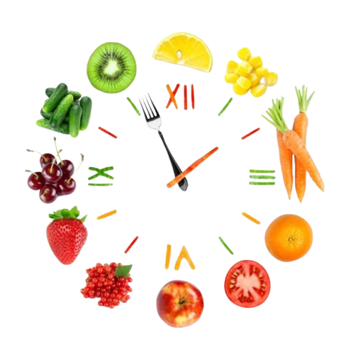

Postul alimentar și protocoalele de post alimentar
Postul alimentar a devenit o metodă populară de îmbunătățire a sănătății și de susținere a pierderii în greutate prin alternarea perioadelor de alimentație cu cele de post. Există mai multe tipuri de post alimentar, fiecare având un mod specific de abordare și beneficii adaptate stilurilor de viață diverse. Descoperă mai jos care dintre ele ar putea fi potrivit pentru tine!
Cele 6 tipuri ale postului alimentar
Protocoale de post alimentar
Dacă sunteți la începutul călătoriei dvs. de post, vă recomandăm să începeți cu protocolul de 30 de zile, ideal pentru cei care nu au experimentat până acum beneficiile postului. Această abordare graduală vă va ajuta să vă adaptați la schimbările necesare și să obțineți rezultate optime.
Pentru cei care au mai experimentat postul, vă invităm să explorați celelalte protocoale disponibile, adaptate pentru ameliorarea unor afecțiuni specifice.
Indiferent de alegerea dvs., este esențial să implicați medicul în această călătorie, pentru a asigura o experiență sigură și eficientă.
NU UITA! Alimentele potrivite în funcție de ziua ciclului menstrual sunt:
- Zilele 1-10: alimente ketobiotice
- Zilele 11-15: alimente pentru susținerea hormonilor
- Zilele 16-19: alimente ketobiotice
- Ziua 20-sângerare: alimente pentru susținerea hormonilor.